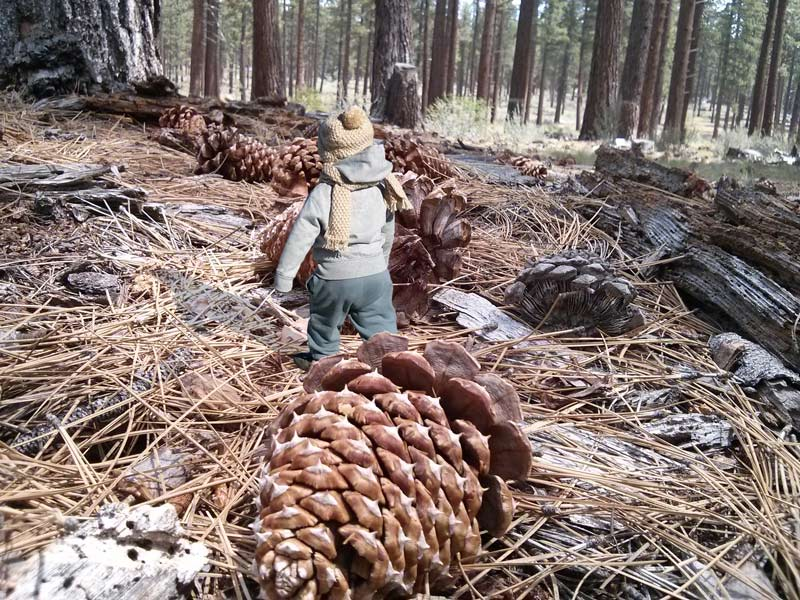

We live in a world where all the objects have a certain size, and we accept that size unconditionally - it is what it is. We expect all familiar objects to be a certain size. What if all of a sudden all the objects started changing their size - would that create total chaos? Would it be a crazy world to live in if there wre more objects that didn't fit it the "normal range"?
I asked local people why there was a huge turtle in the volcano crater, but nobody could really tell me. Neither did anyone know where it came from, and how it got it. I marveled at this magnificent creature a while longer, then I had to go eat lunch. I hope one day to see the turtle again.
I had a curious encounter with a surprisingly small creature. He looked like a little boy, only very, very small. "Hello, little boy! I really like your hat!" - I said. But he didn't acknowledge me, and just kept going somewhere among the fallen pine cones. I will never know why that boy was so small and where he was heading - but I will ever forget him.
"Wow, that is awesome - what else can you tell me?"
If you're interested in learning more about things that don't quite fit in with our perception, check out this cartoon called "The Lost Thing"by Shaun Tan.I have seen enough. Take me back to Home page